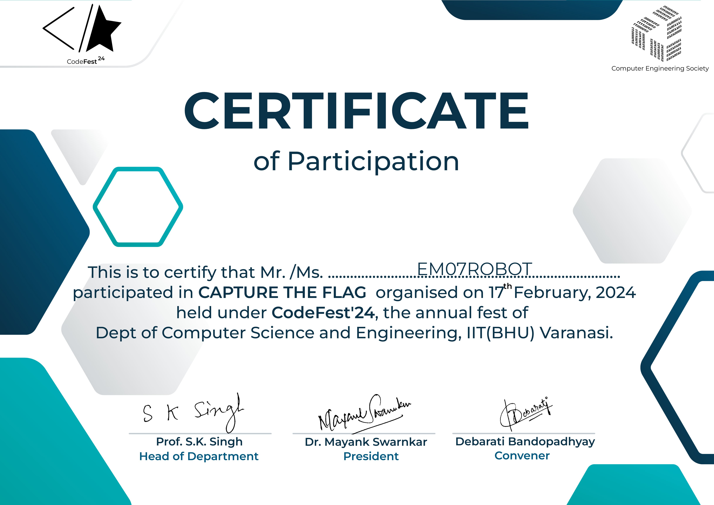
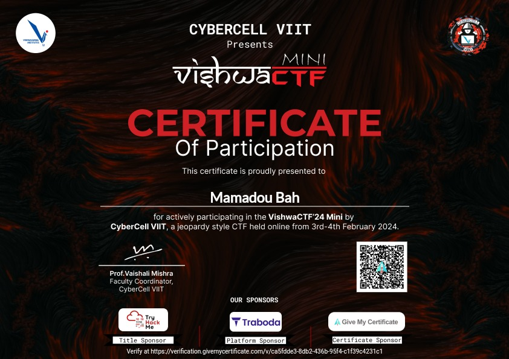
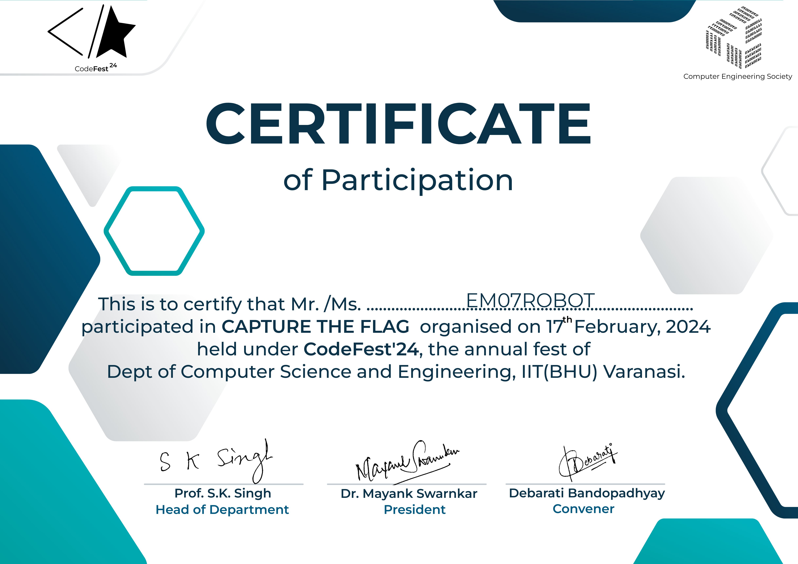
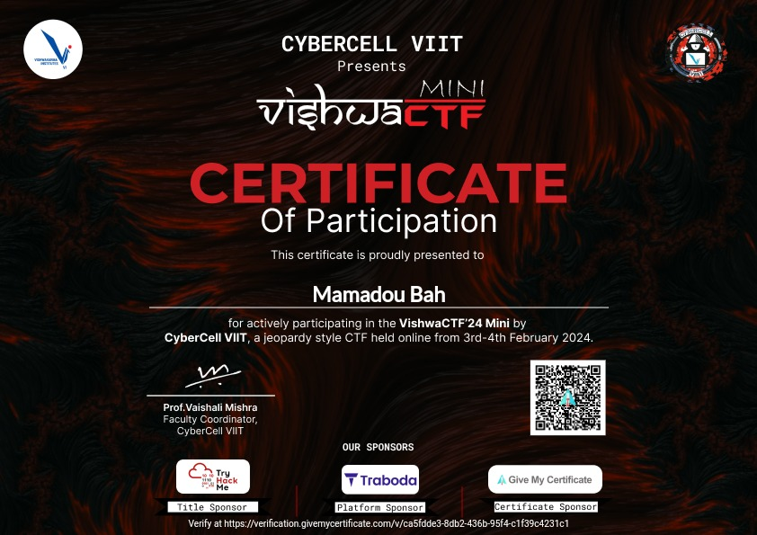

About Me

Je m'appelle Mamadou Bah, je suis pentester.
L'ordi c'est mon ring, je combat avec le code.
Je suis un étudiant autodidacte passionné par la cybersécurité. Mon parcours d'apprentissage autonome m'a conduit à explorer diverses plateformes en ligne telles que TryHackMe, Hack The Box, Cryptohack, PortSwigger et d'autres où j'ai acquis des compétences solides dans le domaine de la sécurité informatique. Ces expériences m'ont permis de développer une expertise pratique dans la résolution de problèmes et l'exploitation des failles de sécurité, ainsi qu'une solide éthique de travail et une passion pour l'apprentissage continu.
Sur TryHackMe, j'ai plongé dans l'univers captivant des machines virtuelles vulnérables, tandis que Hack The Box m'a offert des défis plus complexes avec des systèmes réels à pirater. PortSwigger m'a permis de perfectionner mes compétences en sécurité des applications web, tandis que Cryptohack a stimulé mon intellect avec des défis de cryptographie intrigants. À travers ces plateformes, j'ai acquis une compréhension approfondie des principes fondamentaux de la cybersécurité et développé une mentalité de résolution de problèmes.L'une des plateformes qui m'a fait aimer les CTF est CTFlearn
Work Experience
- CTFer chez WWF (world wide flags)
- CTFer chez fsociety
Skills
En tant que CTFer avec l'équipe WWF (World Wide Flags) et fsociety, j'ai acquis une expérience précieuse dans le domaine de la sécurité informatique et du piratage éthique. Travailler au sein de ces équipes dynamiques m'a permis de développer mes compétences en résolution de problèmes, en analyse des vulnérabilités et en exploitation des failles de sécurité. Nous avons collaboré sur divers projets de sécurité, effectué des audits de sécurité et participé à de nombreux CTF (Capture The Flag) de renommée internationale.
Ci-dessous, vous trouverez des images de certains de mes certificats et récompenses de CTF, illustrant ma participation et mes performances exceptionnelles dans ces compétitions. Ces images témoignent de mon engagement envers l'apprentissage continu, ma passion pour la sécurité informatique et ma capacité à relever des défis techniques avec succès
 


